Fazekas Gyűjteményes Ház
Az életmű legszebb darabjai
Szűcs Imre népi iparművész legszebb munkáinak megőrzött darabjai egy 1865-ben épült, felújított parasztházban láthatók Tiszafüreden, a Belsőkertsor utcában.

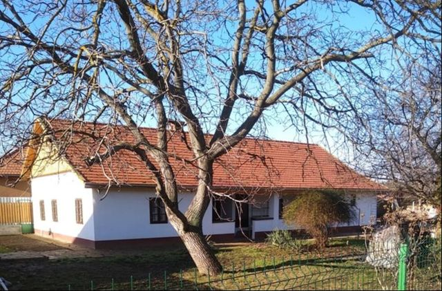
Látogatás
Előzetes telefonos egyeztetéssel
Kérem, előre egyeztessünk időpontot
A tervezhetőség érdekében; a házirend szerint eseti látogatók a tulajdonos egyéb elfoglaltságának függvényében látogathatják a házat, ezért sokat kell várakozniuk.
- Cím
- 5350 Tiszafüred, Belsőkertsor u. 5.
- Látogatható
- 2021. június 18-tól. A házirend szerint előre egyeztetett időpontban, 9 és 18 óra között.
- Belépődíj
- A honlap szerint felnőtteknek 1000 Ft, diákoknak 500 Ft; a házirend szerint a helyszínen, készpénzben fizethető. A díjak aktualitását a telefonos egyeztetéskor érdemes megerősíteni.
- Vezetés
- A látogatókat általában a mester kalauzolja; elfoglaltsága esetén felesége vagy valamelyik lánya.
- Kapacitás
- Egyszerre legfeljebb 15 fő látogathatja, egy helyiségben legfeljebb öt látogató tartózkodhat. Csoportos és családi látogatás kizárólag előzetes egyeztetés alapján lehetséges.
- Kiállított edények
- Nem eladók, de bármelyikük megrendelhető a mestertől.
A ház
Népi építészeti emlék és kiállítótér
A Fazekas Gyűjteményes Háznak a Tiszafüred, Belsőkertsor 5. szám alatti felújított régi parasztház ad helyet. Az ingatlan önmagában is népi építészeti emlék, amely abban a korban épült (1865), amikor virágzott a fazekasság Tiszafüreden. A felújítást Magyarország Kormányának Népi Építészeti Programja keretében kapott támogatás tette lehetővé.
Szűcs Imre hosszú éveken át féltve őrzött legszebb darabjait itt mutatja be a nagyközönségnek. Az itt látható népi kerámia tárgyak egyrészt tükrözik a hagyományos tiszafüredi fazekas stílusjegyeket, másrészt magukon hordozzák Szűcs Imre egyéni stílusának elemeit: az utóbbi évtizedekben készült alkotások között a „Szűcsimre-stílusban” készült edények dominálnak.
A megnyitó hírek szerint a későbbiekben időszakos jelleggel a fazekasműhelyben alkotó további népi iparművészek alkotásai, illetve a mester válogatása szerinti tematikus kiállítások is helyet kapnak a házban. A Gyűjteményes Ház a Kiss Pál Múzeum és a Nyúzó Gáspár Tájház mellett az élő fazekas népművészetet bemutató újabb hely a Tisza-tavi kulturális turizmusban.
Házirend – néhány pont
- Mindent a szemnek és semmit a kéznek: a kiállított edényeket felemelni, elmozdítani nem szabad.
- Fényképezés az udvaron korlátozás nélkül, bent belépőjegy birtokában lehetséges; videózás csak külön díj megfizetése mellett. Vaku, fotóállvány, szelfibot tilos.
- Dohányozni csak az udvaron kijelölt helyen lehet.
- Parkolás a Tompa Mihály utca felőli kerítés mellett; a ház a Tompa Mihály utcai bejárat felől kerekesszékkel megközelíthető, WC rendelkezésre áll.
- Télen a ház fűtött; nyáron a vályogépület belső hőmérséklete kissé hűvösebb a kintinél.
A belső tér
Polcok, tányérok, kancsók

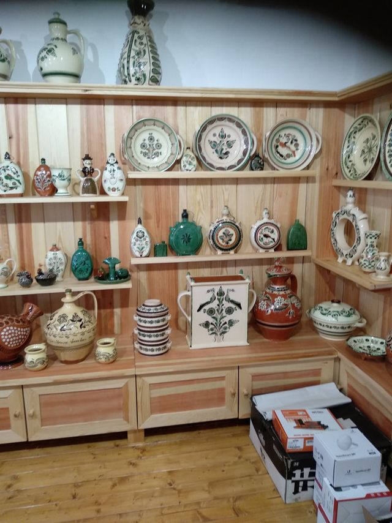

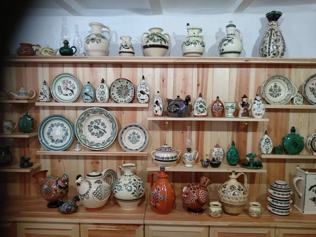

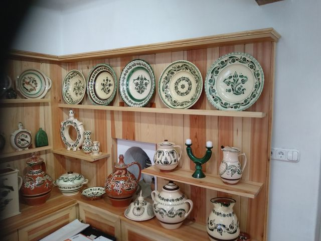

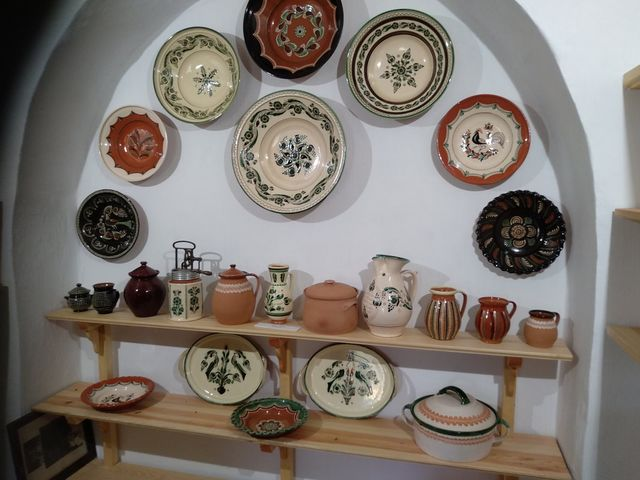

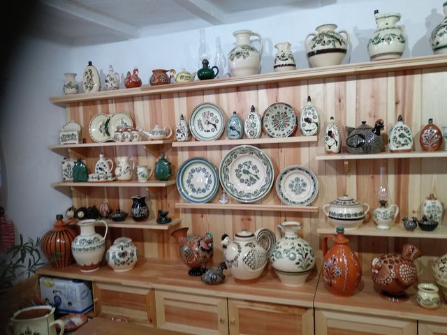

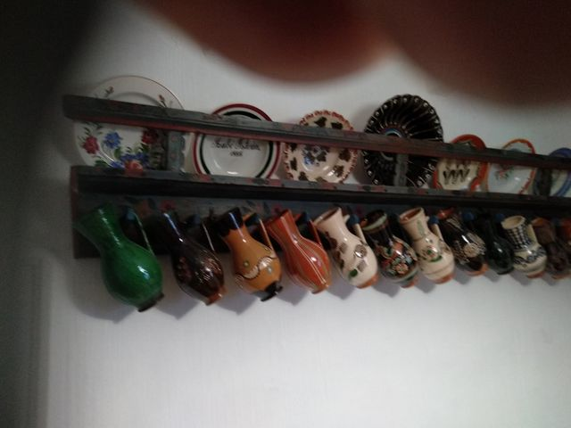
A tiszafüredi Főnix Televízió invitáló videóját az Írások között találja.
A felújítás
Amit a felújítás során megőriztek
A felújítás során törekedtek arra, hogy a legtöbb népi építészeti emléket megőrizzék:
- Boltíves kemencetüzelő nyílások a konyha-pitvar oldalfalában.
- A korabeli szabadkémény négy pilléren nyugvó, boltíves füstjáratai az oldalfal mellett és a boltívek közepén, amelyek funkcionálisan is működőképesek.
- A szabad tűztér felső boltív-szerkezetére ráépített hagyományos kémény.
- A szobák mestergerendás jellegű födémszerkezete.
- Az utcai szoba mestergerendája: natúr fa, benne az építés évszáma: 1865.
- Eredeti nyílászárók, a bejárati ajtón huzatszabályozó kis ablakkal, eredeti réz kilincsekkel és cilinderekkel.
- A főépület tetőszerkezetének alakja.
- Könyöklős tornác, korabeli pádimentum tégla hidegburkolattal.
- Padlásfeljáró a pitvar légterében, belülről alatta a holtlépcsőtérben fali téka.
- A falazatban feltárt, tárolás céljára meghagyott bemélyedések, polcok.
A felújítás előtt

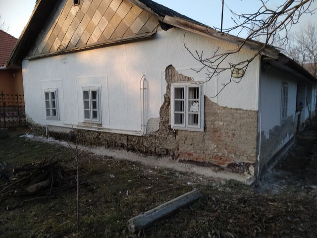

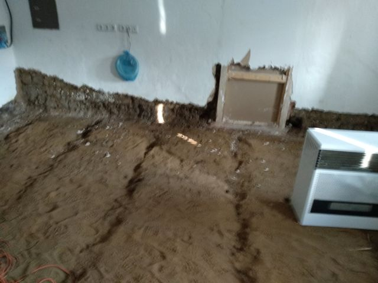

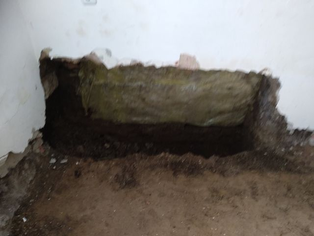

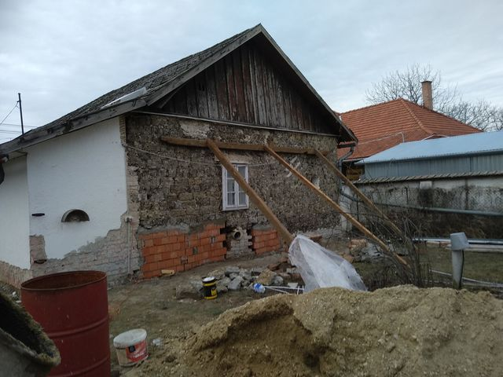

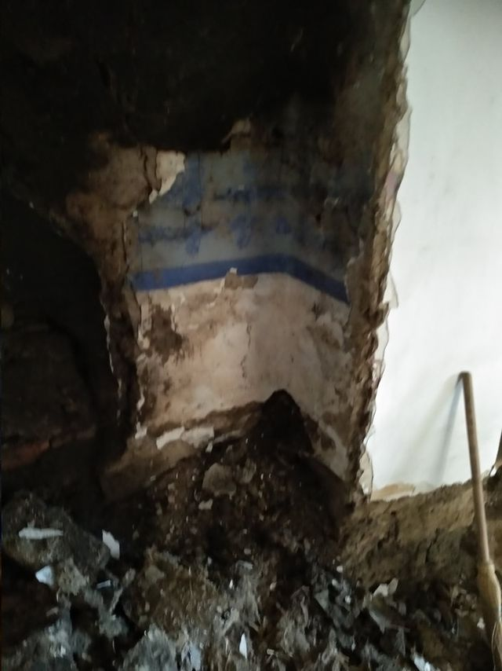

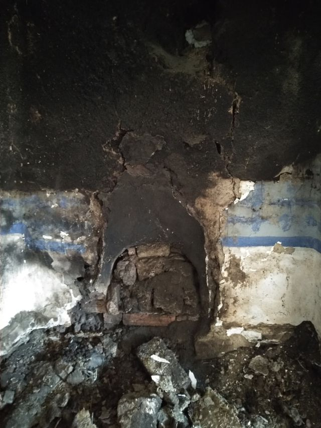
A felújítás után

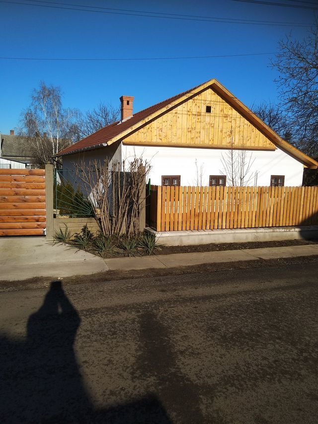

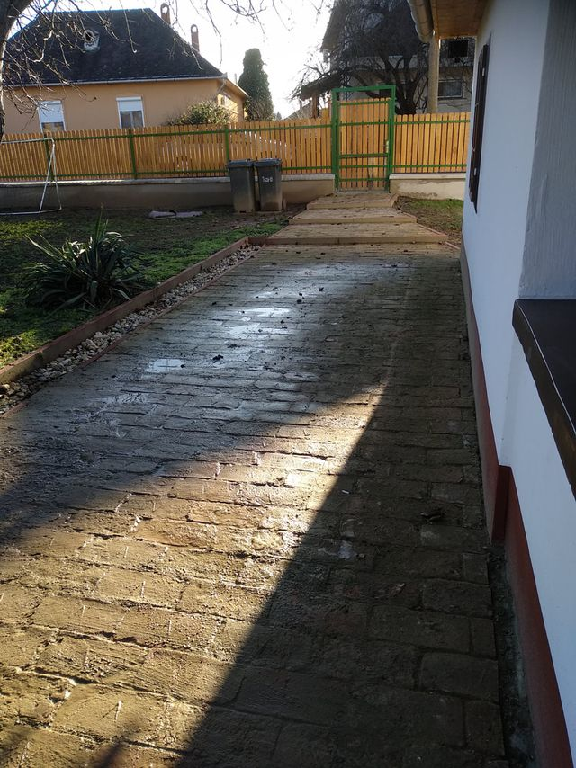

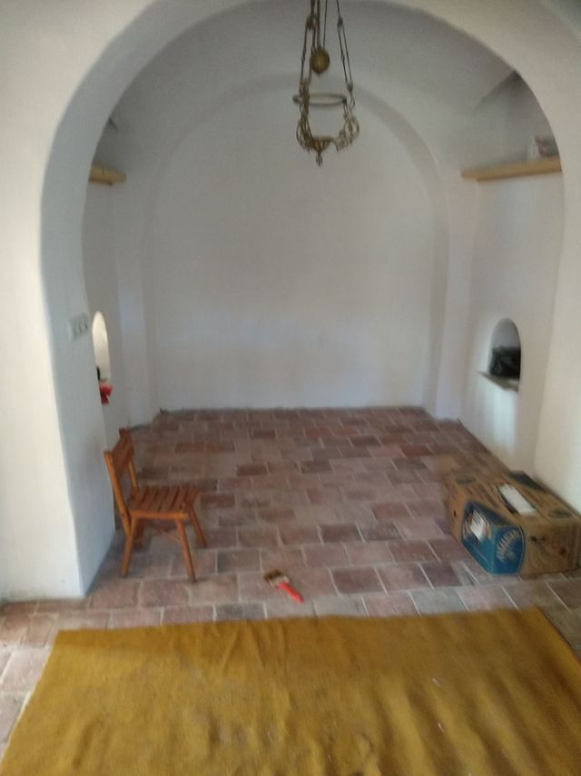

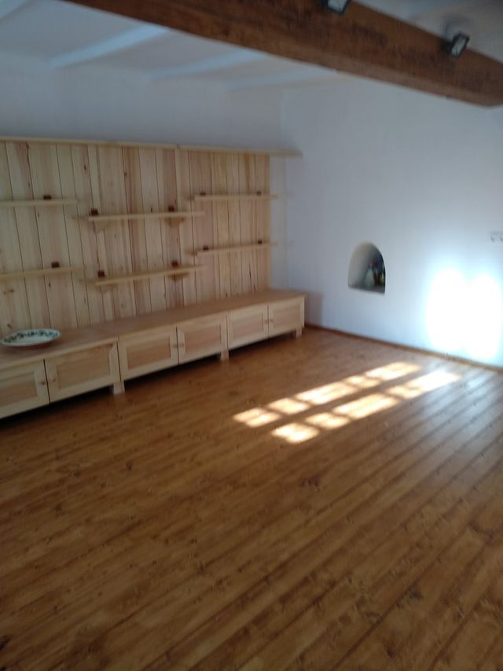

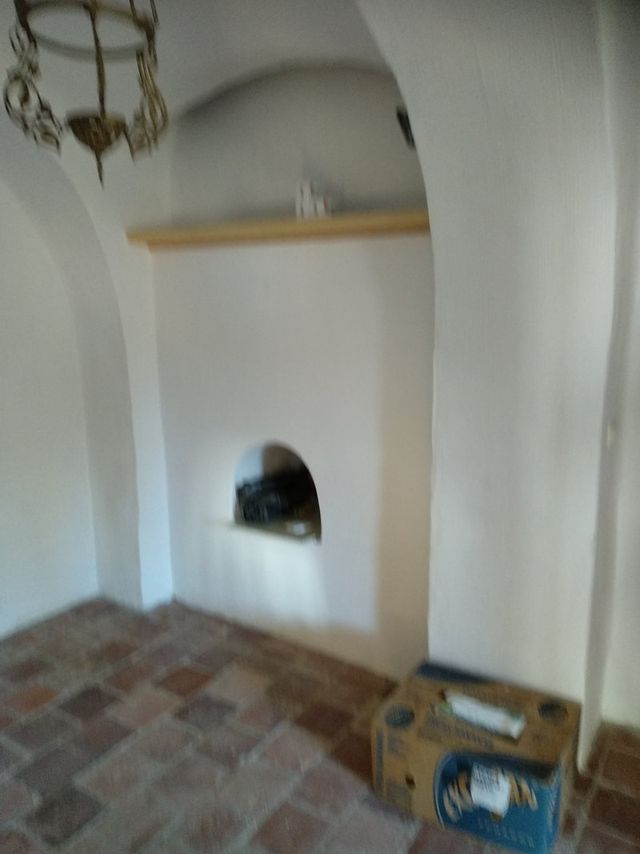

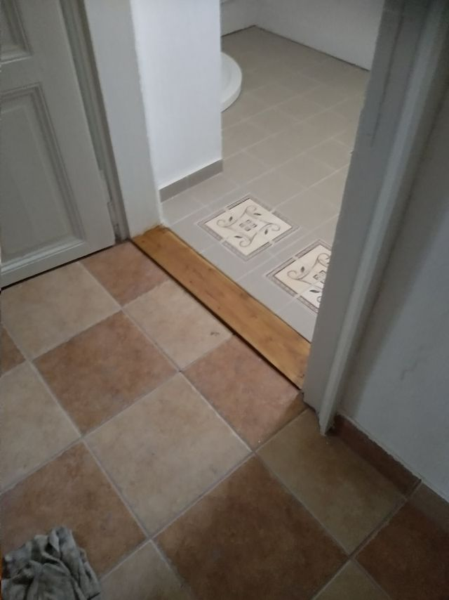

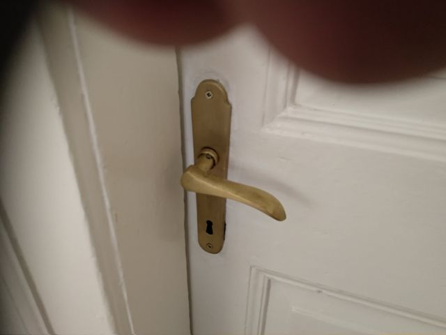